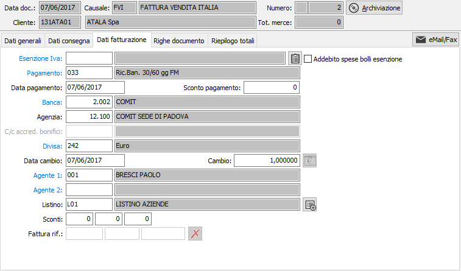
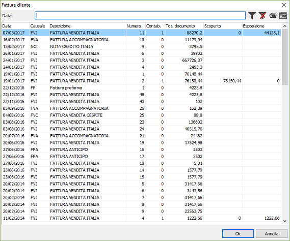
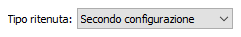
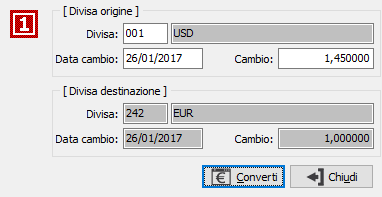

Dati fatturazione
In questa finestra video vengono visualizzati, se esistenti, i dati
di fatturazione desunti dall’anagrafica del cliente in esame o dall’anagrafica
della destinazione diversa. È possibile apportare variazioni a tutti i
dati di questa pagina video, ma le variazioni saranno significative sono
per la fattura in esame, fermi restando per le successive forniture i
valori memorizzati nell’anagrafica del cliente. Se assenti, taluni di
questi dati devono essere inseriti ed il programma, a conferma della fattura,
controlla l’esistenza di quelli obbligatori.
Se è attiva la gestione delle cessioni relative a prodotti agricoli
e agroalimentari sarà presente anche una casella "Durata prodotti"
che imposta il pagamento in relazione a come è parametrizzata la modalità
di pagamento; una volta impostata può limitare l'inserimento dei prodotti;
oltre ai valori descritti per i prodotti (non specificata, prodotti deteriorabili,
prodotti non deteriorabili) può assumere anche il valore “Da non considerare”
in tal caso sul documento possono essere inseriti anche prodotti con tipologie
differenti.
Se è attiva la gestione delle vendite a privati UE (in base alla presenza
delle date inizio adesione OSS/IOSS in configurazione) sarà presente il
campo “Regime OSS”; il campo si compone di tre valori: “Nessuno”, “Regime
OSS”, “Regime IOSS”; la presenza dei singoli regimi è condizionata alla
presenza in configurazione delle rispettive date di inizio adesione. La
proposta del campo viene così effettuata: cliente privato (flag privato
in anagrafica clienti spuntato), la nazione del cliente o della destinazione
se presente diversa da Italia (Iso IT) e membro UE (flag membro CEE spuntato);
se attivi entrambi i regimi viene proposto sempre OSS. In base al tipo
di regime ed alla nazione del cliente/destinazione, al tipo di regime
ed al codice nomenclatura eventualmente presente sul prodotto viene ricercato
sulla nuova tabella il codice Iva associato all’abituale codice Iva del
prodotto; se con una specifica nomenclatura non viene trovata nessuna
associazione viene effettuata un nuova ricerca con nomenclatura vuota.
Al salvataggio dei documenti viene effettuato un controllo di coerenza
dei codici Iva presenti sulle righe: devono essere tutti relativi alla
stessa gestione del regime OSS, quindi tutti OSS, tutti IOSS o tutti senza
gestione del regime; sono incluse nel controllo le aliquote Iva delle
spese se è configurato che le spese non debbano essere ripartite e se
valorizzate.

CODICE ESENZIONE:
eventuale codice alfanumerico di 3 caratteri, presente nella tabella Aliquote
Iva, per assoggettare la fattura, ad una eventuale esenzione Iva. Il campo
vuoto determina il normale addebito dell’Iva; la presenza di un codice
Iva di esenzione determina invece la non applicazione dell’Iva. Viene
automaticamente presentato l’eventuale codice Iva di esenzione presente
in anagrafica clienti. Qualora venga inserito un codice Iva non soggetto
ad esenzione, viene visualizzato un messaggio di avvertimento, ma è possibile
proseguire con l'inserimento; in questo caso su tutte le righe che verranno
inserite sarà riportato il codice Iva appena inserito. Sul campo sono
attive le funzioni di ricerca (F9) ed accesso rapido alla tabella (CTRL+W).
Nel caso il cliente abbia associato delle lettere di intento sarà attivo
il pulsante di gestione per il collegamento
sul documento.
ADDEBITO SPESE BOLLI
ESENZIONE: Il bollo sarà addebitato in caso di dichiarazione di intento
o in caso di esenzione il cui codice Iva preveda l'addebito bolli (casella
con segno di spunta).
CODICE PAGAMENTO:
codice alfanumerico di 3 caratteri, presente nella tabella Modalità di
pagamento, per definire le condizioni di pagamento della fattura in esame.
La compilazione del campo è obbligatoria. Viene automaticamente presentato
il codice presente in anagrafica clienti. Sul campo sono attive le funzioni
di ricerca (F9) ed accesso rapido alla tabella (CTRL+W).
DATA PAGAMENTO: campo
data in cui viene visualizzata automaticamente la data di decorrenza pagamento.
In campo è accessibile solo nel caso in cui la modalità di pagamento preveda
l’inserimento di una data di decorrenza da parte dell’utente.
SCONTO PAGAMENTO:
campo numerico in cui viene visualizzato l’eventuale sconto per pagamento
desunto dalla modalità di pagamento. Il campo è modificabile dall'utente.
CODICE BANCA: codice
numerico, presente nella tabella Banche, per indicare la banca d’appoggio
in caso di pagamenti a mezzo effetti o a mezzo bonifici. Viene proposto
automaticamente la Banca eventualmente presente nell’anagrafica del cliente
attivo, modificabile dall’utente. Sul campo sono attive le funzioni di
ricerca (F9) ed accesso rapido alla tabella (CTRL+W).
CODICE AGENZIA: codice
numerico, presente nella tabella Agenzie, per indicare l’agenzia della
banca d’appoggio in caso di pagamenti a mezzo effetti o a mezzo bonifici.
Viene proposto automaticamente l’Agenzia eventualmente presente nell’anagrafica
del cliente attivo, modificabile dall’utente. Sul campo sono attive le
funzioni di ricerca (F9) ed accesso rapido alla tabella (CTRL+W).
CODICE DIVISA: codice
alfanumerico di 3 caratteri, presente nella tabella Divise, per indicare
la divisa stabilita per la fattura attiva. Viene proposta automaticamente
la Divisa presente nell’anagrafica del cliente attivo, modificabile dall’utente.
Sul campo sono attive le funzioni di ricerca (F9) ed accesso rapido alla
tabella (CTRL+W).
DATA CAMBIO: campo
data, attivo solo nel caso di divisa non appartenente all’area Euro, per
inserire la data del cambio che consentirà la valorizzazione nella moneta
di conto della fattura attiva. A conferma, viene visualizzato il cambio
corrispondente, se presente in tabella Cambi.
CAMBIO: campo numerico,
attivo solo in caso di divisa non appartenente all’area Euro, per inserire
il cambio che consentirà la valorizzazione nella moneta di conto della
fattura attiva. Viene visualizzato il cambio relativo alla data del campo
precedente, se presente in tabella Cambi. Sul campo sono attive le funzioni
di ricerca (F9) ed accesso rapido alla tabella (CTRL+W).
CODICE AGENTE 1: codice
alfanumerico di 3 caratteri, presente nella tabella Agenti, per indicare
l’agente a cui verranno assegnate le eventuali provvigioni relative alla
fattura attiva. Viene proposto automaticamente l’Agente presente nell’anagrafica
del cliente attivo, modificabile dall’utente. Sul campo sono attive le
funzioni di ricerca (F9) ed accesso rapido alla tabella (CTRL+W).
CODICE AGENTE 2: codice
alfanumerico di 3 caratteri, presente nella tabella Agenti, per indicare
un eventuale secondo agente a cui verranno assegnate le eventuali provvigioni
relative alla fattura attiva. Viene proposto automaticamente il secondo
Agente presente nell’anagrafica del cliente attivo, modificabile dall’utente.
Sul campo sono attive le funzioni di ricerca (F9) ed accesso rapido alla
tabella (CTRL+W).
LISTINO: eventuale
codice alfanumerico di 3 caratteri, presente nella tabella Descrizione
listini, per definire il listino prodotti da cui devono essere desunti
i prezzi da applicare alla fattura attiva. Se presente, viene proposto
automaticamente il listino presente nell’anagrafica del cliente attivo,
modificabile dall’utente. Sul campo sono attive le funzioni di ricerca
(F9) ed accesso rapido alla tabella (CTRL+W).
SCONTI/MAGGIORAZIONI:
campi numerici per inserire eventuali percentuali di sconto o maggiorazione
che verranno applicate sul totale documento. Vengono proposte automaticamente
le percentuali presenti nell’anagrafica del cliente attivo, modificabili
dall’utente. In numero di campi sconto/maggiorazione attivi dipende dal
valore inserito in Configurazione base.

FATTURA
RIF.: I campi, nell'ordine anno, causale e numero, contengono il
riferimento alla fattura solo nel caso in cui si intenda assegnare una
nota di credito ad una fattura. Sul primo campo è attiva la ricerca sulle
fatture del cliente, dalla quale è possibile selezionare la fattura a
cui associare la nota di credito.

Nel
caso in cui sia stato attivato il flag “Utilizza tipi ritenuta configurabili”,
presente nella configurazione Standard – Ciclo attivo, sui dati di fatturazione
è visibile il campo “Tipo ritenuta” su cui è possibile selezionare una
ritenuta d’acconto specifica, il campo è attivo solo per i clienti per
cui vengono addebitate le ritenute. Il campo permette di assegnare alla
fattura una ritenuta d’acconto specifica e non quella principale e/o aggiuntiva
impostata sul cliente, è possibile selezionare una tipologia tra quelle
definite in configurazione Standard – Ciclo attivo nei campi “Etichetta
tipo ritenuta acconto”, il valore di default del campo è “Secondo configurazione”
per cui vengono addebitate le ritenute d’acconto impostate sul cliente.

 Il
pulsante, attivo solo in inserimento di un nuovo documento, consente di
sostituire il codice divisa nel caso in cui il documento da cui la fattura
deriva (ordine, Ddt) sia stato emesso con una divisa diversa rispetto
a quella della fattura stessa. Viene mostrata la finestra presente a lato
in cui deve essere impostata la divisa di origine la data del cambio ed
il cambio stesso proposti in automatico dalla tabella cambi giornalieri;
come divisa di destinazione, non modificabile, viene utilizzata la divisa
presente sulla fattura ed il relativo cambio e data cambio. La pressione
del pulsante Converti, previa richiesta conferma, effettua il ricalcolo
del valore di tutte le righe presenti e relativi totali.
Il
pulsante, attivo solo in inserimento di un nuovo documento, consente di
sostituire il codice divisa nel caso in cui il documento da cui la fattura
deriva (ordine, Ddt) sia stato emesso con una divisa diversa rispetto
a quella della fattura stessa. Viene mostrata la finestra presente a lato
in cui deve essere impostata la divisa di origine la data del cambio ed
il cambio stesso proposti in automatico dalla tabella cambi giornalieri;
come divisa di destinazione, non modificabile, viene utilizzata la divisa
presente sulla fattura ed il relativo cambio e data cambio. La pressione
del pulsante Converti, previa richiesta conferma, effettua il ricalcolo
del valore di tutte le righe presenti e relativi totali.
 Se
attiva la gestione dei listini di rigo, configurabile tramite l’omonimo
parametro in configurazione “Standard - ciclo attivo”, è presente, accanto
al listino di testa, il pulsante mostrato a lato che può essere utilizzare
per riassegnare il listino di testa (con relativo ricalcolo dell'importo)
a tutte le righe. Il codice del listino è sempre presente sul rigo del
documento, se non è gestito il listino di rigo viene assegnato comunque
uguale al listino di testa al salvataggio finale del documento.
Se
attiva la gestione dei listini di rigo, configurabile tramite l’omonimo
parametro in configurazione “Standard - ciclo attivo”, è presente, accanto
al listino di testa, il pulsante mostrato a lato che può essere utilizzare
per riassegnare il listino di testa (con relativo ricalcolo dell'importo)
a tutte le righe. Il codice del listino è sempre presente sul rigo del
documento, se non è gestito il listino di rigo viene assegnato comunque
uguale al listino di testa al salvataggio finale del documento.